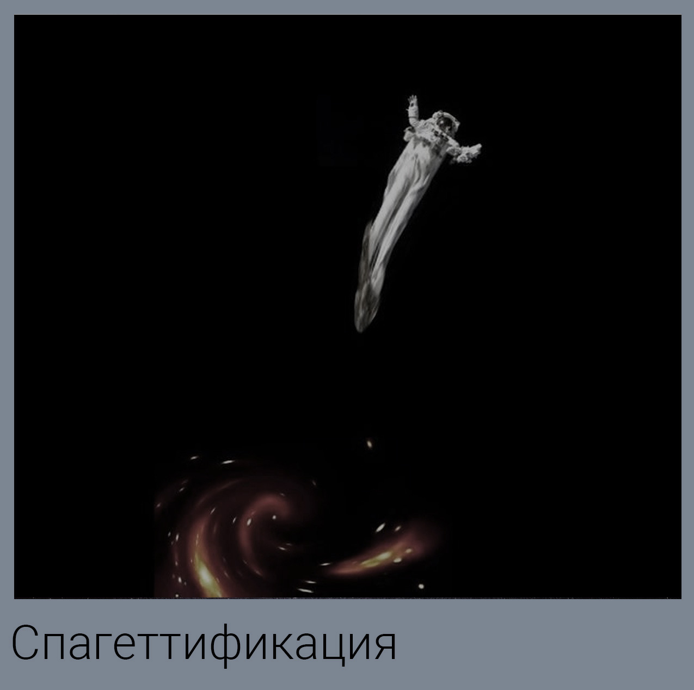
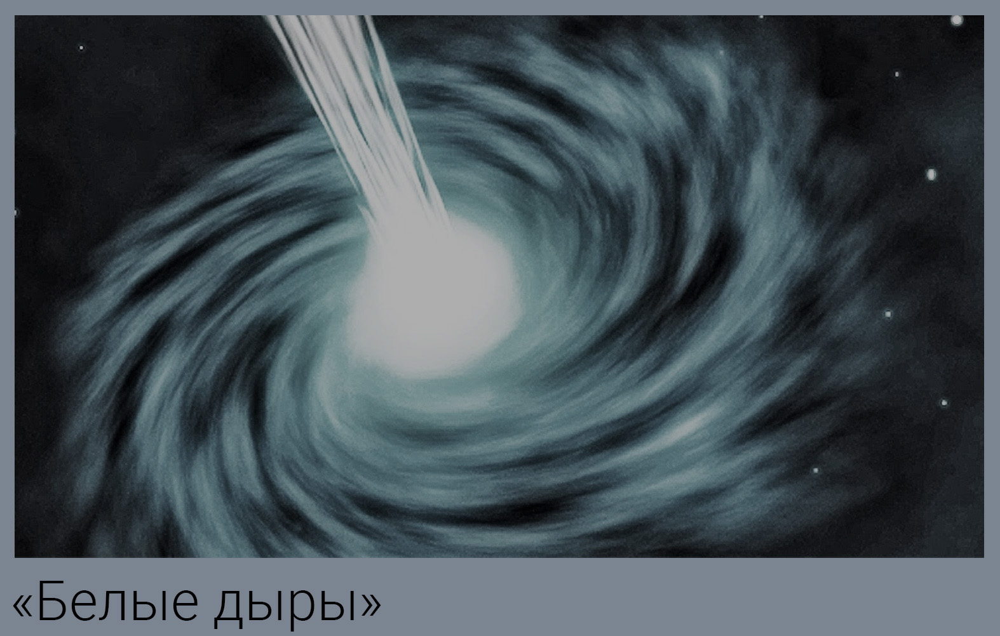

Путешествие во внутрь чёрной дыры
Смерть до горизонта событий
Если вы полагаете, что чёрная дыра навредит человеку, только когда тот пересечёт горизонт событий, то ошибаетесь. Трудности начнутся куда раньше.
Чёрные дыры редко бывают одиноки. Как правило, они окружены огромной кучей материи — газа, который остался после того, как дыра закусила какой нибудь звездой. Газ летает по орбите с огромной скоростью, поэтому имеет чудовищную кинетическую энергию и разогревается до гигантских температур.
Аккреционные диски чёрных дыр испускают мощное электромагнитное излучение. Энергия рентгеновских и гамма лучей в миллион миллионов раз превышает энергию видимого света.
Все эти потоки заряженных частиц, которые чёрная дыра разбрасывает на сотни световых лет вокруг себя, вряд ли добавят здоровья. Небесное тело прикончит человека ещё на подлёте обычной радиацией, не прибегая к нарушениям топологии пространства и искривлениям времени.
Давайте предположим, что космонавт позаботился о радиационной безопасности и продолжает свободное падение к ней.
Но исследователя поджидает очередное препятствие, а именно: аккреционный диск. Он состоит из очень горячего газа.
Диск нагревается, когда частицы газа соударяются друг с другом, нарезая круги с бешеной скоростью вокруг чёрной дыры. Кинетическая энергия переходит в тепловую. Вещество вблизи средней чёрной дыры может разогреваться до миллионов или даже триллионов кельвинов.
Если человека убьёт не радиация, то высокая температура.
Источники:
Первый
Спагеттификация
Ввиду вышесказанного лучше будет совершить путешествие в чёрную дыру без аккреционного диска. Такие тоже бывают — если по соседству нет звёзд, из которых можно выкачивать газ. То есть дыра их все уже благополучно поглотила. Так что вполне можно приблизиться к горизонту событий чёрной дыры, не сталкиваясь с потоками горячей плазмы.
Проблемы, которые возникнут у космонавта дальше, будут зависеть от размеров чёрной дыры.
По мере приближения к чёрной дыре массой как одна солнечная будет возрастать и сила тяготения, с которой она на человека воздействует. На определённом расстоянии от дыры получится так, что тяготение, оказываемое на ноги, будет многократно больше, чем тяготение, действующее на голову. Эта разница называется «приливная сила».
Сначала приливные силы чёрной дыры порвут космонавта пополам аккуратно посередине туловища. Потом ноги и туловище порвёт ещё пополам. Затем ещё раз. И так в геометрической прогрессии, пока на элементарные частицы не распадутся даже атомы, из которых жертва сделана. Затем весь этот поток частиц окажется за горизонтом событий.
Земля тоже создаёт приливную силу, действующую на ваше тело, но недостаточную, чтобы порвать вас.
Это явление называется «спагеттификация». Обычно приливные силы чёрных дыр спагеттифицируют звёзды, но и с людьми справятся.
Согласно новой теории американских физиков, если человек достиг горизонта событий огромнейшей чёрной дыры, то, теоретически, он будет находиться в относительной безопасности. Расстояние до её центра будет огромным, а поэтому разрушительные приливные силы будут иметь слабое воздействие.
Может это и продлит жизнь и позволит немного «насладиться» путешествием, но выбраться живым всё же вряд ли удастся. Чтобы стало немного понятнее, можно сказать иначе: выход из горизонта событий будет означать движение назад во времени, что является невозможным. То есть, пока вы не пересекли его, вы всё ещё можете выбраться обратно.
Источники:
Первый
Приключения в искривлённом пространстве и времени
Скорость движения будет постоянно увеличиваться, но чем быстрее вы будете перемещаться, тем медленнее будет ваше движение во времени. В какой-то момент время для вас остановится, и вы должны увидеть всё, что попало ранее сюда до вас, причём одновременно, а если обернётесь, то увидите всё, что никогда и не попадёт.
Одна версия гласит, что человек сможет увидеть всю историю перед своими глазами – от момента Большого взрыва и до угасания Вселенной. Захватывающе, не так ли? Но это если существует дыра без сингулярности внутри, и вам повезло в такую попасть. Вместо этого в центре должна быть кротовая нора. Всё это будет напоминать запуск видеоролика с историей Вселенной.
Источники:
Первый
Попадание в параллельную Вселенную
Если однажды попадете в чёрную дыру, осознанно ли или случайно, то первое, что нужно сделать, постараться оглядеться. Может быть, вы таким образом сможете найти выход, кто знает. Даже если окажется, что вернуться в ту Вселенную, откуда вы прибыли, уже не получится, то оказаться в параллельной Вселенной может показаться не таким уж и плохим концом вашего путешествия.
Некоторые физики убеждены, что как только вы достигните сингулярности, это может стать неким мостиком между вашей и альтернативной реальностью.
Может не зря существует теория, что есть бесконечное число альтернативных Вселенных, и в каждой из них абсолютно разные вы. Все мы знаем, что одно небольшое решение может изменить нашу жизнь навсегда. Вот в альтернативной реальности была бы отличная возможность в этом убедиться.
Источники:
Первый
Путешествие во времени
Величайшие физики, жившие на нашей планете, такие как Эйнштейн и Хокинг, теоретизировали в своё время на тему того, что путешествие во времени в будущее будет возможно благодаря использованию внутренних законов чёрных дыр. Как указывалось ранее, обычные законы физики внутри чёрной дыры перестают действовать и на главную роль выходят совершенно иные. Одна из вещей, которая отличает черные дыры от нашего мира, это то, как в них течёт время.
Гравитация внутри чёрной дыры настолько мощная, что способна искривлять время. Учитывая это, можно предположить, что искривление времени открывает возможность путешествия в нем. Если научиться использовать столь разительные отличия между пространством внутри и снаружи горизонта событий, то, вполне возможно, за счет гравитационного замедления времени мы сможем отправиться в будущее, где вы по-прежнему останетесь молоды, в то время как ваши друзья уже состарятся.
Источники:
Первый
Вы выйдете через белую дыру
Известно, что чёрные дыры в конечном итоге поглощают абсолютно всё, что попадает в их горизонт событий. Даже свет не может избежать трагичной участи. Менее же известно то, что происходит со всеми этими обреченными частицами дальше. Согласно одной из теорий, всё, что попадает в чёрную дыру с одного конца, выбирается наружу с другого конца. И этим вторым концом является так называемая белая дыра.
Конечно же, никто до сих пор никаких белых дыр не видел (но стоит отметить, что чёрная дыра была запечатлена только в 2019 году), поэтому никто с уверенностью не может сказать, белые ли они на самом деле. Однако причиной, по которой их так называют, является то, что белые дыры представляют собой полную противоположность тому, чем являются чёрные дыры. Вместо поглощения всего вокруг, они, наоборот, выплёвывают всё то, что находится внутри них. Как и в случае с чёрной дырой, от которой убежать не получится, попади вы в её горизонт событий, так и с белой дырой все то же самое. Только наоборот: попасть вы в неё не сможете.
Если кратко: белая дыра выплевывает всё то, что было поглощено чёрной дырой, в альтернативную Вселенную. Эта теория в некоторой степени заставила физиков задуматься о возможности того, что белые дыры являются основой создания нашей Вселенной такой, какой мы её знаем. И если вы когда-нибудь попадёте в чёрную дыру, каким-то образом выживете и сможете выйти с другой стороны через белую дыру в альтернативной Вселенной, то обратно в нашу Вселенную вы уже вернуться никогда не сможете.
Источники:
Первый
Заключение
Стоит отметить, что это лишь гипотезы, у которых практически нет доказательств. Некоторые теории более вероятны, некоторые менее. Самым логичным будет смерть ещё до преодоления горизонта событий. А после него, вас скорее всего погубит явление спагеттификации.
Также сложность для учёных представляет сингулярность, которая практически не изучена, ведь она не подчиняется известным науке законам физики. Но любое подтверждение какой-либо теории изменит понимание Вселенной, её появления и места человека в ней. Этот вопрос один из самых спорных в области фундаментальной физики.